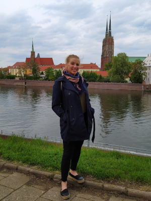
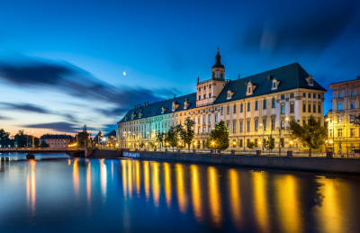

Ze wszystkich miast, które odwiedziliśmy w Europie, Wrocław był największą niespodzianką. Nie możemy się doczekać powrotu...Len Rutledge

Kim jestem?
Urodziłam się we Wrocławiu i tu spędziłam większość życia. Odkąd pamiętam interesowało mnie wszystko co związane z tym miastem: jego dzieje, architektura czy kultura. Pewnie dlatego zdecydowałam się studiować historię na Uniwersytecie Wrocławskim (staram się jednak nie zanudzać swoich słuchaczy przytaczaniem jedynie pustych dat!). Odkąd ukończyłam kurs przewodnika po Wrocławiu, co chwilę odkrywam nowe aspekty miasta oraz przekonuję się jak inspirujące może być dzielenie się wiedzą, które przy okazji daje możliwość poznania innych perspektyw i punktów widzenia.
Prywatnie uwielbiam spędzać czas z moimi psami, chodzić na długie spacery (czy to po wrocławskich parkach czy po górach), podróżować, czytać książki i ćwiczyć jogę. Ostatnio coraz więcej czasu poświęcam front-endowi, czego efektem jest ta strona :)
Co oferuję?
Oprowadzam wycieczki grupowe i indywidualne, piesze i rowerowe. W różnych przedziałach wiekowych. Moim głównym celem jest: nie zanudzić słuchacza :) opowiedzieć wszystko jak najzwięźlej, ale też jak najpełniej i najciekawiej się da. Na życzenie mogę przygotować i poprowadzić grę miejską (nie mam gotowych szablonów- staram się dostosowywać zadania do wieku i preferencji uczestników).
Cena ustalana jest indywidualnie, w zależności od czasu trwania wycieczki, terminu i wielkości grupy.
Napisz lub zadzwoń, przedstaw swoje oczekiwania, a ja postaram się przygotować ofertę najlepiej dostosowaną do Twoich potrzeb.
Wrocław
... to miasto, którego właściwie nikomu nie trzeba przedstawiać. Stolica Dolnego Śląska, piąte pod względem powierzchni, a czwarte co do liczby mieszkańców miasto w Polsce, jeden z głównych ośrodków uniwersyteckich w kraju itp.
Ja podczas swoich wycieczek, chciałabym również zwrócić uwagę na wielokulturowość Wrocławia, jego zawiłe dzieje, które sprawiły że dzisiaj wygląda tak a nie inaczej. Dlaczego obok średniowiecznego ratusza znajduje się modernistyczny biurowiec z lat 30., a kilka ulic dalej zabudowa plombowa z lat 90. XX wieku? Skąd we Wrocławiu Synagoga? I co tu właściwie robią krasnoludki? Na te i inne pytania postaram się odpowiedzieć w czasie moich wycieczek. Będzie też sporo ciekawostek, a jeżeli czas pozwoli to i legend, które bezsprzecznie tworzą klimat miasta.
Quiz
Przygotowałam kilka pytań, które mają na celu nie tylko sprawdzenie Waszej wiedzy, ale także (a może przede wszystkim) zwrócenie uwagi na pewne aspekty Wrocławia, które z różnych względów mogą być pomijane podczas indywidualnych wycieczek. Jeżeli nie zachęci Was to do wybrania spaceru z przewodnikiem, to na pewno będzie bodźcem aby poczytać co nieco i wgłębić się w klimat miasta!